Portafolio
Trabajos recientes
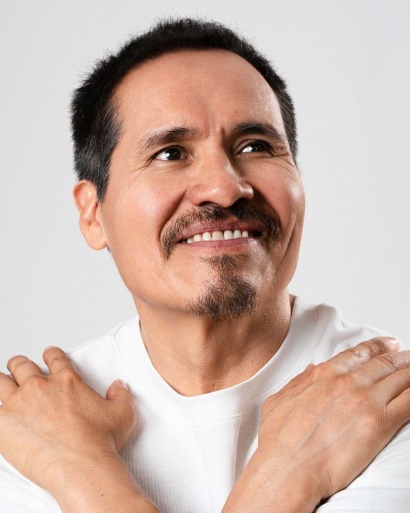
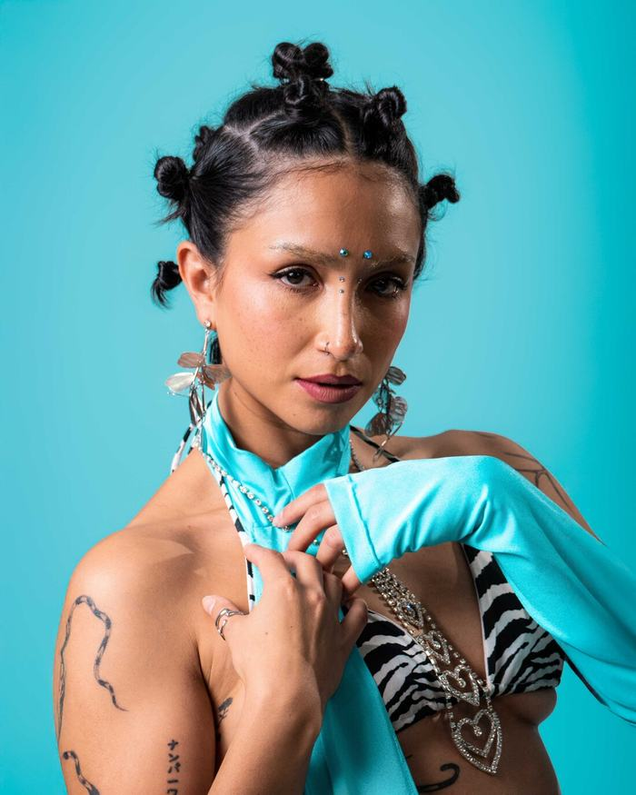
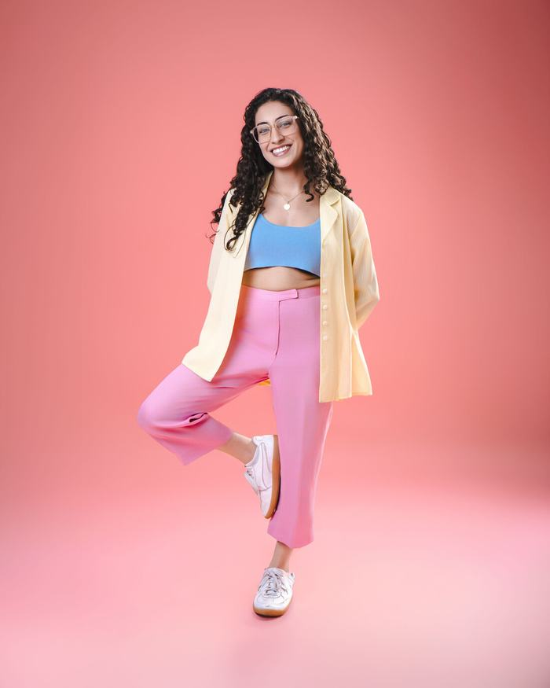
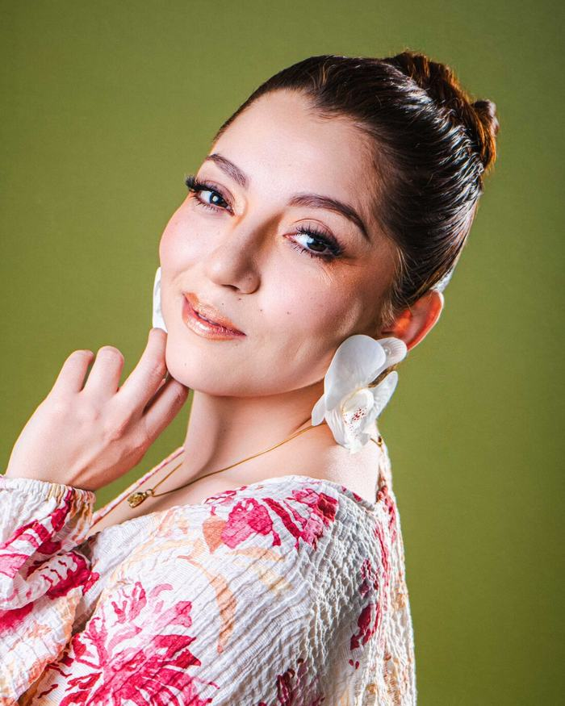
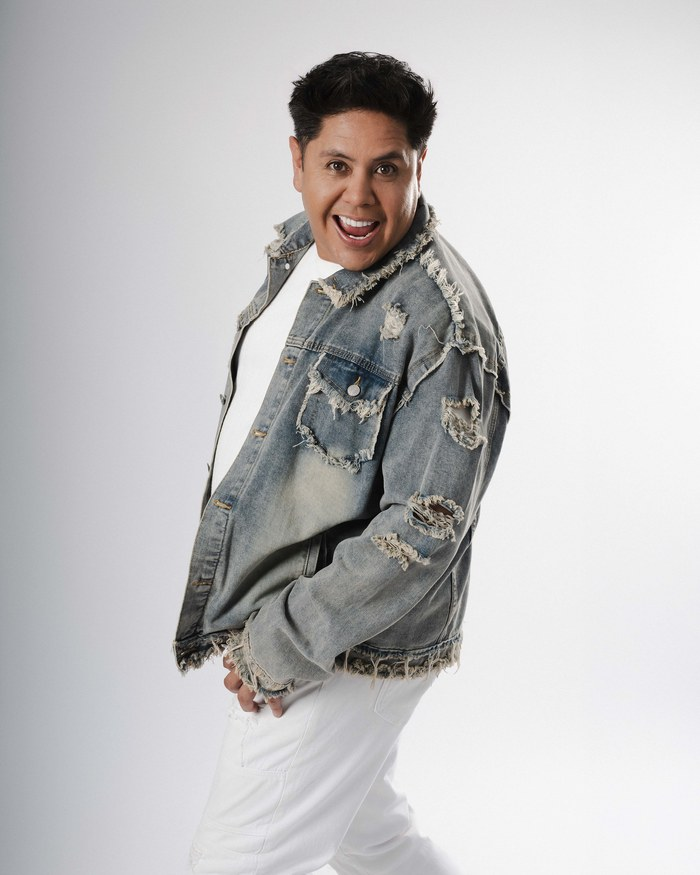
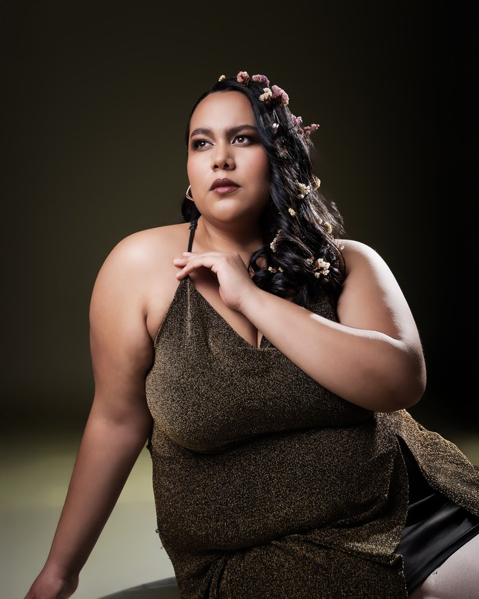
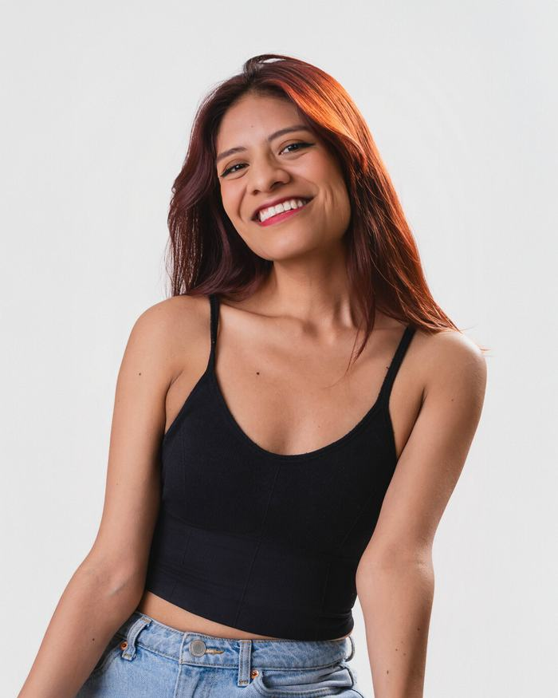
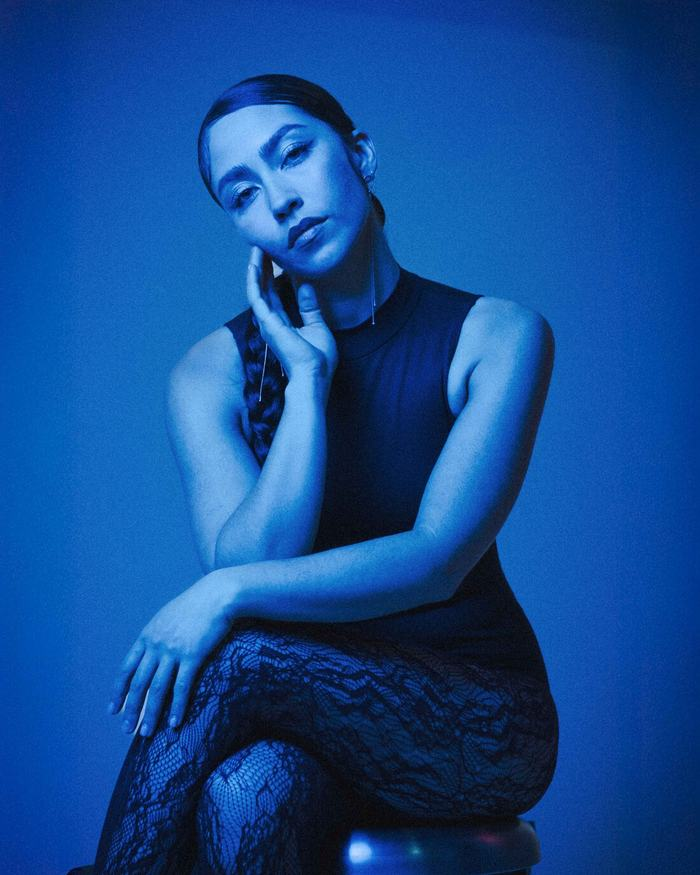

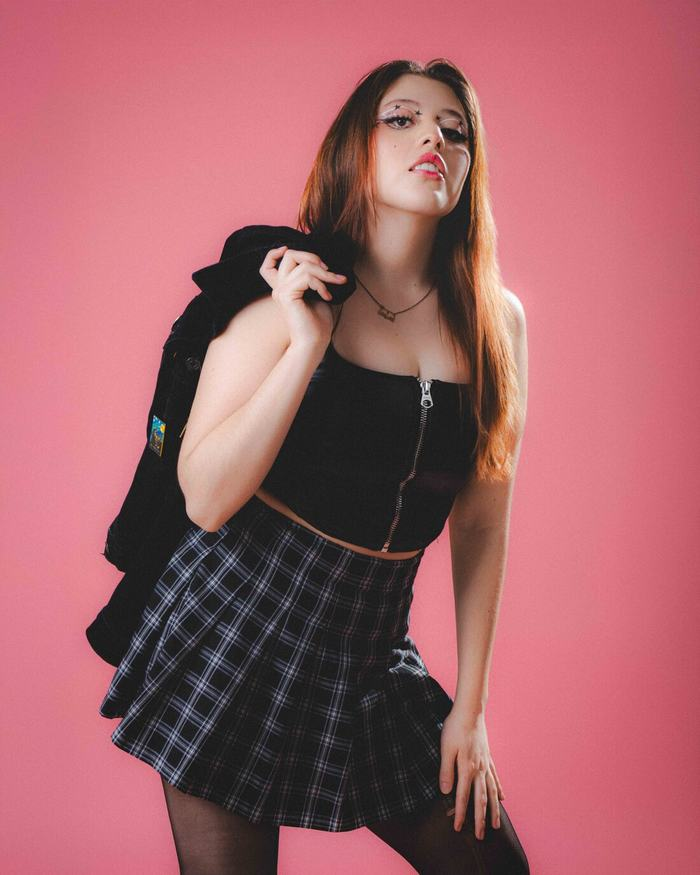
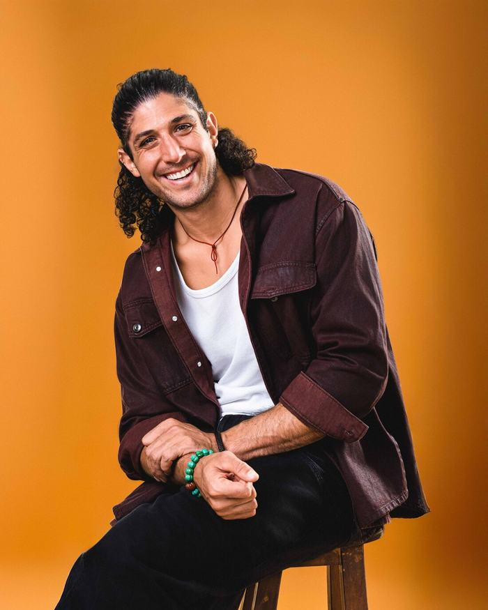
Ya viste el carrusel: ningún resultado se parece a otro.
Se estima que el
en México no actualiza su book en más de dos años.
Unos por no saber cómo y otros por no haberlo hecho nunca.
El resultado es el mismo:
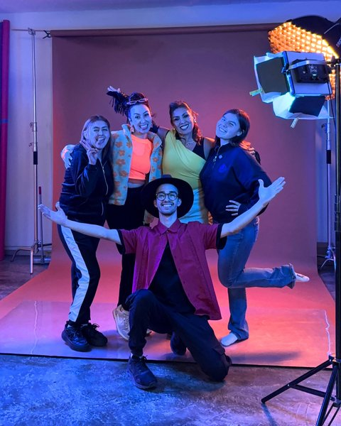
Detrás de cada sesión hay un equipo completo enfocado en una sola cosa: que tú te veas y te sientas como el protagonista que ya eres.
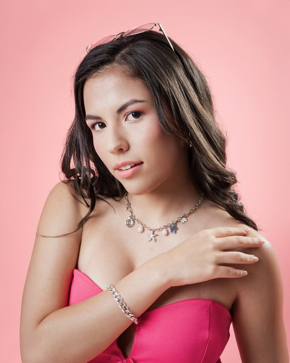
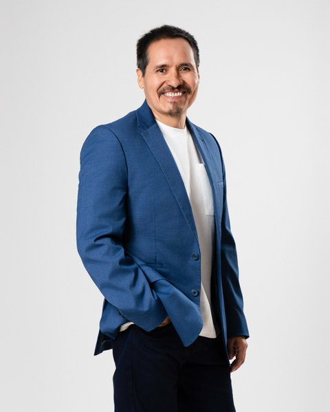
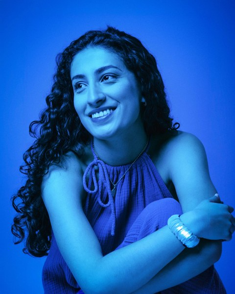
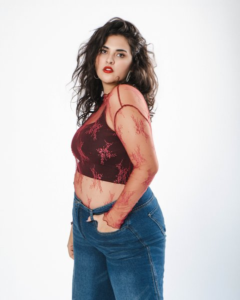
Cada actor sale con un resultado pensado desde su propia historia,
hecho a su medida.
Aquí nada es de aparador. Cada experiencia se ajusta a dónde estás parado hoy en tu carrera — como un traje a medida.
El precio exacto de tu experiencia se define en tu cafecito con Monty.
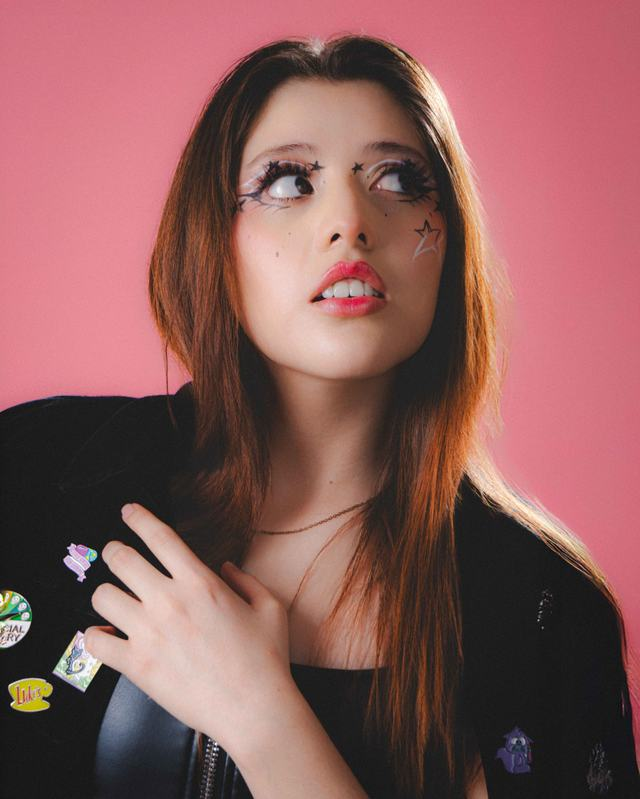
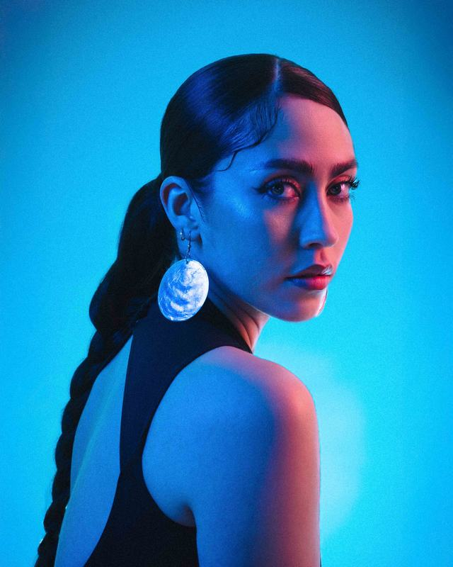
Cada sesión arranca con una plática que nunca se repite.
¿Buscas algo que no ves aquí? Lo más probable es que ya lo hayamos resuelto antes. Los extras están en el FAQ ↓
Un mes se convierte en seis.
Seis se convierten en dos años.










Ya viste el carrusel: ningún resultado se parece a otro.
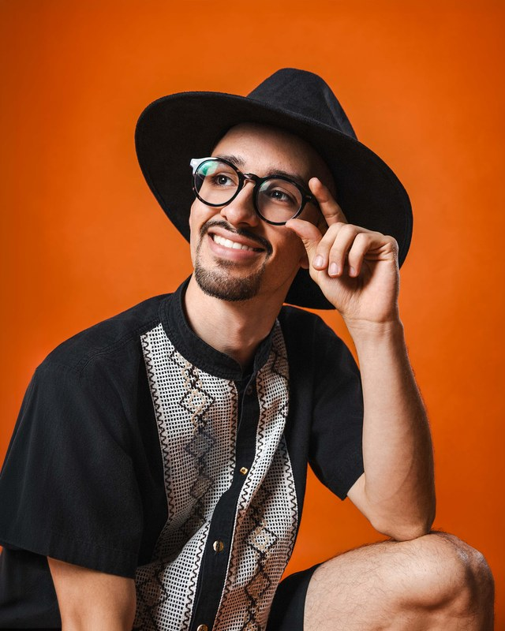
Para el actor que está leyendo esto:
Antes de ser fotógrafo de retrato para actores, dirigí actores en cine — incluso fui director de casting en la ópera prima de un amigo. Ahí noté algo que ningún director enseña: la mayoría actúa desde el “quiero tener la chamba”, sin pararse nunca a cuestionarse ni a voltear a verse a ellos mismos.
Y no era falta de talento.
De esa grieta nació todo mi desmadre: Monty Experience — un proceso diseñado para actores dispuestos a reconectar consigo mismos.
Sé lo que se siente ver tu book y no reconocerte en él. Yo también pasé por ahí.
Por eso no arrancamos con la sesión, arrancamos con una conversación honesta sobre qué hay detrás de lo que quieres lograr — y de ahí personalizamos tu sesión, a tu medida.
Y dirás: normalmente cuando renuevas tu book te queda la misma pregunta — ya tengo mi book, ¿ahora qué chingados hago? El proceso no se queda ahí: cada sesión cierra con un seguimiento, un asesoramiento para trazar la ruta.
Actualmente acompaño a actores que sienten que se quedaron fuera del juego, a volver a competir con una imagen que por fin los represente en cada casting.
Dale play. Súbele al volumen. Esto no lo actué yo.
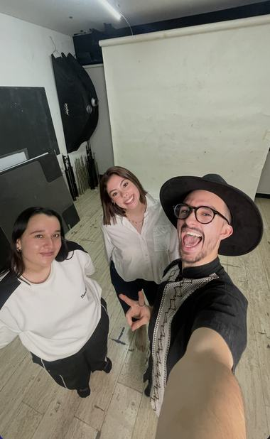
Bri Navarro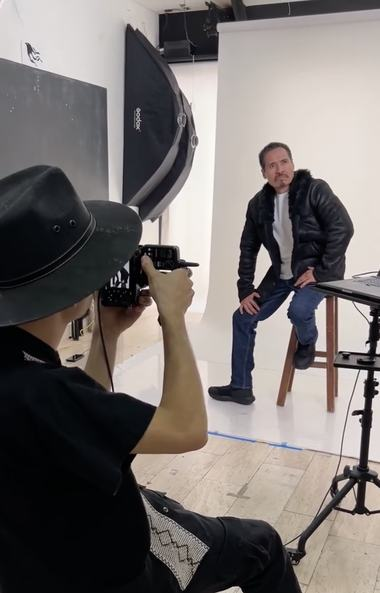
Leonardo Alonzo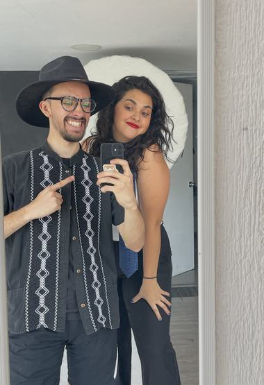
Lupita Medina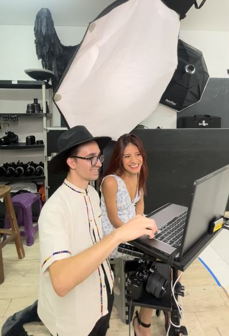
Paty GuzmánEntre 2 y 6 horas, según la experiencia que elijas. La mayoría se relaja a la primera hora, y ahí es cuando empieza lo bueno.
Sí, de 3 a 6 cambios según tu experiencia. No eres una sola nota. Tu book tampoco debería serlo.
No llegas a ese susto: te ves en pantalla mientras tomamos las fotos. Si algo no es tuyo, lo cambiamos ahí, en caliente. A la selección llegas ya sabiendo que sí eres tú.
No pasa nada. Lo ideal es el mismo día de tu sesión, pero si no se acomoda, lo reagendamos uno o dos días después — ya quedó apartado desde antes. Y si de plano no se puede en persona, al día siguiente antes del mediodía te mando todas las tomas y los highlights con instrucciones para elegir; mandas tu selección a la galería y, si lo necesitas, seguimos la asesoría por videollamada.
Es un extra, aparte de las tres experiencias — ninguna la incluye por default. METASTAR es para cuando ya pasaste por tu Elite o Fénix y la pregunta cambia de "cómo me veo" a "ahora qué hago con esto". Si te interesa, lo platicamos directo por WhatsApp una vez que termines tu experiencia.
Dos semanas no son demora, son preparación. Es el tiempo que toma reunir a tu stylist, tu maquillista y el estudio — para que el día de tu sesión todo esté listo, sin improvisar.
No es que te hagamos esperar — es que armamos algo más grande. Tres semanas de anticipación aseguran que cada parte de tu Fénix esté lista a tiempo.
De 2 a 15 días hábiles, según la experiencia. ¿Traes prisa? Hay entrega al día siguiente con costo extra — para cuando el casting no puede esperar.
Classic, Elite y Fénix cubren el 100% de lo que necesitas para relanzarte. Y para lo que se sale de lo normal, también tenemos solución:
¿Te interesa alguno de estos servicios extra? Escríbeme por WhatsApp y armamos tu experiencia a la medida.
“No hay nada más caro que esforzarte tanto y que nunca sea suficiente.”
Cupos limitados este mes: 8 disponibles.
Culo si no
te descubres.
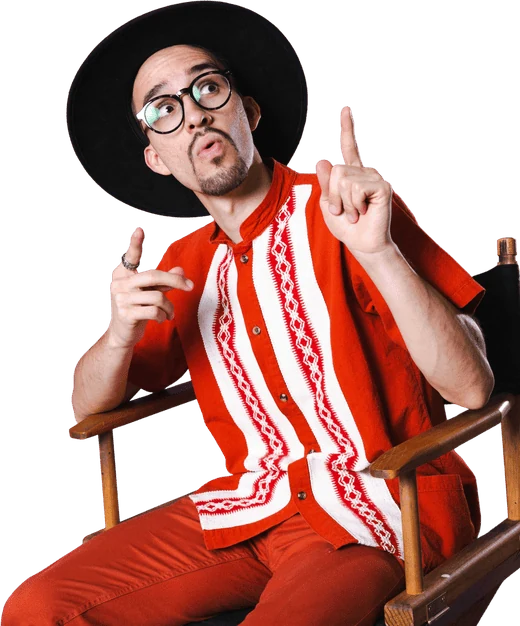
Mándame mensajito por WhatsApp.